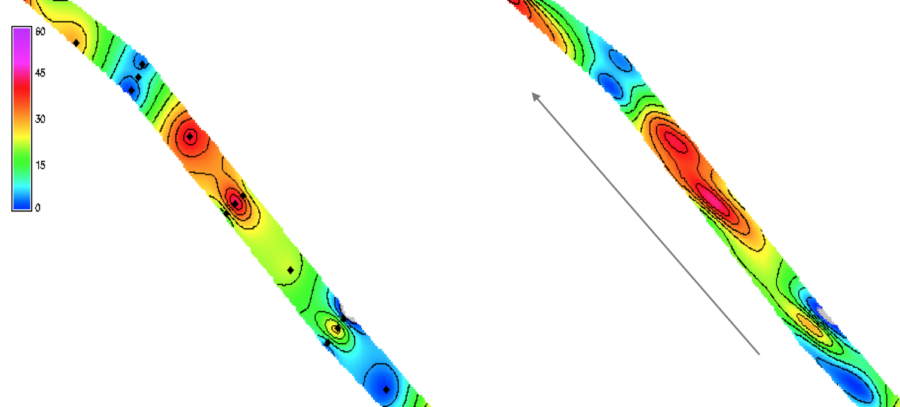

Spatial Interpolation: Splines
Helena Mitasova
Outline (learning objectives)
- Spline interpolation
- Spline parameters: tension and smoothing
- Evaluating interpolation accuracy: deviations, crossvalidation
- Special cases: contours, anisotropy
- Trivariate interpolation of volumes and topo-climatology
- Selection of points and segmentation
Interpolation with radial basis functions
Variational approach is based on minimizing:
- deviations from the given points
- smoothness seminorm or roughness penalty
Physics-based interpretation: spline interpolation function is a thin flexible plate with tunable bending energy
Formally equivalent to universal kriging
Radial basis functions: multiquadrics, splines
Splines: general equation
$$
F(r) = T(r) + ∑ λ_j R(r,r_j) \; j=1,m
$$
- $r = (x,y)$ is location of a grid point,
- $r_j=(x_j,y_j$) is location of a measured point
- $T(r)$ is trend (low order polynomial),
- $λ_j$ are coefficients
- $R(r,r_j)$ is a radial basis function
Splines with different properties
Spline properties depend on the formulation of
smoothness seminorm or roughness penalty
- thin plate spline
- spline with tension
- regularized spline
- regularized spline with tension (completely regularized spline)
- see the smoothness seminorms in
Table 1
- see the equations for selected $R(.)$ in the section 6.6.4
here
Regularized splines with tension (RST)
$$
F(r) = T(r) + ∑ λ_j R(\rho_j) \; j=1,m
$$
- where $\rho =\varphi |r-r_j|$
- $\varphi$ is the tension parameter and
- $|r-r_j|$ is the distance between the unsampled and measured points.
Spline tension rescales distances, it has similar effect to shortening range in kriging
or decreasing the distance weight exponent in IDW
High tension stretches the distances making the sheet thinner and more flexible
this shortens the range of influence of each point, so the range effect is inverse of tension
Spline: tension
Tension controls the stiffness of the plate:
- high tension: soft rubber sheet, short range
- low tension: stiff steel plate, long range

Spline: tension

High tension, short range of influence, soft rubber sheet, rough surface, peak or pit in each data point
Low tension, long range of influence, stiffer steel plate, smoother surface, possible overshoots.
Note that tension is inverse of stiffness
Spline: smoothing
Allows the surface to deviate from measured points
$$F(x_i,y_i) = z(x_i, y_i) + \varepsilon(x_i,y_i)$$
Reduces overshoots, noise, improves numerical stability
Can be applied to individual points for data with different accuracies.
Example: lidar bare earth data: low smoothing for open areas, high smoothing for forest
Spline: smoothing
Smoothing controls the deviation from the data points, large smoothing results in trend surface $T(x,y)$
Spline: smoothing
Smoothing can be spatially variable
Spline interpolation from points
- Spline with tension: numerical solution supports carved streams, but here the
tension is too high
- RST method lower tension combined with smoothing reduce bias towards given points


Note that tension is inverse of stiffness
Figure from
Mitas, L., Mitasova, H., 1999, Spatial Interpolation. In: P.Longley, M.F. Goodchild, D.J. Maguire, D.W.Rhind (Eds.), GIS: Principles, Techniques, Management and Applications, GeoInformation International, Wiley, 481-492.
Spline interpolation from contours
If the density of points along contours is high, spline with high tension leads
to sUrface with steps along contours, point reduction and lower tension improves the result
Interpolation with anisotropy
Anisotropic tension: rescaling distances in a given direction making the range of influence different in this direction, leading to anisotropic pattern in the resulting surface

Interpolation from profiles
RTK GPS or single beam sonar use automated dense sampling along a line
– anisotropy can be used to rescale distances between profiles and minimize artifacts
Better alternative is to map it with a drone using structure from motion
Interpolation accuracy
Effect of smoothing: measured by deviations from given points
$$
dz (x,y) = z' (x,y) – z (x,y)
$$
where $z'$ is the interpolated value and $z$ is the given value
Predictive accuracy: measured by crossvalidation error
$$e_z (x,y) = z' (x,y) – z_o (x,y)$$
where $z'$ is the interpolated and $z_o$ is the given value in a point that was omitted
from the set of points used for the interpolation.
n-interpolations are performed, each time omitting one point in which $e_z$ is computed:
also called
leave-one-out cross-validation (LOOCV)
Artifacts, bias can be found using histograms, aspect maps, curvatures
Interpolated surface deviations
Deviations map for smoothing 0.1 and 10
Interpolated surface predictive errors
Map showing spatial pattern of predictive errors

Trivariate Interpolation
Given $m$ points measured in 3D space, find such $F(x,y,z$) that for each $i=1,m$
$$
w_i=F(x_i,y_i,z_i)
$$
and compute $w_k=F(x_k,y_k,z_k)$ in 3D grid points
Similarly for 4D space (3D + time): $w_i=F(x_i,y_i,z_i,t_i)$
Supported by specialized software for geostatistics: radial basis functions and splines.
3D spline is available in GRASS GIS
Trivariate Interpolation: volume
Nitrogen concentrations $w_i$ in the Chesapeake Bay sampled at points $(x_i,y_i,z_i)$
with different depths

Trivariate Interpolation: tension
Impact of tension on the volume model: high to low tension
High tension: local max or min at given points, low tension: smooth pattern
with potential "overshoots"
Trivariate Interpolation to 2D grid
- Interpolation of a variable to 2D grid with influence of a third variable
- Given $m$ points $(x_i,y_i,z_i,w_i)$ where $z_i = F_1 (x_i,y_i)$
find such $F_2(x,y,z)$ that for each $i=1,m$
$$
w_i=F_2(x_i,y_i,z_i)
$$
- then compute $w_k=F_3(x_k,y_k)$ at $F_1 \cap F_2$
Example: $w_i$ is precipitation measured at locations $x_i,y_i$ at near-ground elevation $z_i$.
F_1 is represented by a DEM, F_2 is an interpolated precipitation volume (voxel model)
that passes through the points $(x_i,y_i,z_i,w_i)$. $F_3$ is a bivariate function represented
as a 2D precipitation grid which is an intersection of a DEM and the interpolated precipitation volume F_2
Statistical approach of the method is given by Hutchinson
and has been used to interpolate global climate maps (add ref and verify)
Trivariate Interpolation: precipitation
NC mean annual precipitation with zoom into Western NC:
compare bivariate interpolation and trivariate interpolation which includes influence of elevation
If sufficient data are available, the method captures increase of precipitation
with elevation around Asheville and decrease of precipitation with elevation on the border with SC
Trivariate Interpolation: precipitation
Tropical South America mean annual precipitation using bivariate and trivariate interpolation

Trivariate Interpolation: precipitation
Tuning the influence of elevation on precipitation pattern through rescaling in the $z$-direction
Local function implementation
- Only points within the range of influence are needed for interpolation:
- Local search (IDW, geostatistics, some implementations of splines and RBF)– no continuity condition, overlap
- nearest $n$-points
- all points within $d$-distance
- modifications: n-points from each quadrant or increase $d$ until at least $n$-points are found
- TIN, natural neighbor use vertices of triangles or voronoi polygons, additional neighboring
triangles or polygons for non-linear interpolation
Interpolation points selection
- each grid point is interpolated by an independent function
- points overlap ensures continuity
- resolution should be close to the distances of input points


Problems arise when points are clustered, for example all points are from the same contour
- bias, waves
Quadtree segmentation
- each rectangular segment has approximately same number of measured points (segmax)
- each segment has many grid points – many grid points are interpolated by the same function as opposed to local point selection
- interpolation is performed using the points in the segment and its neighbourhood defined by a dynamic window (npmin)
Quadtree segmentation
Problems when the data are too dense along a line can still be there
Dynamic search window is used to find overlapping points to ensure smooth connection of segments